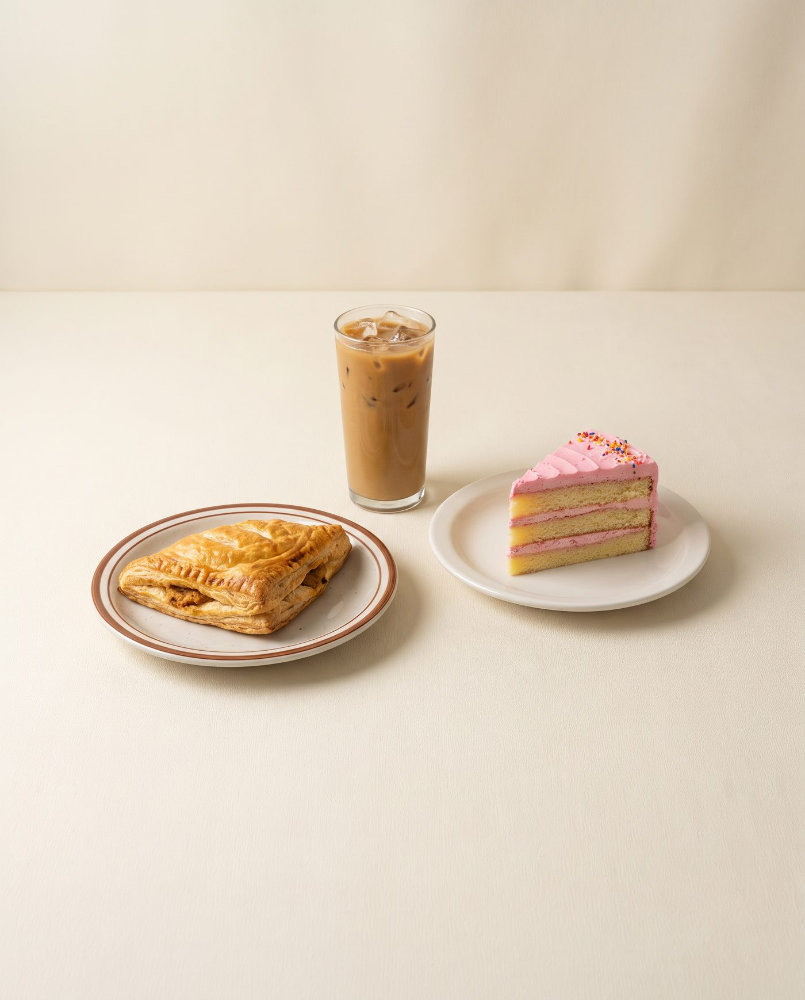

Sweet & Coffee Week · edição Cartoon
Guia de fotos
Guia de fotos
dos combos
Referência prática para fotografar os combos do festival: o que entregar, como enquadrar, como deixar margem para as adaptações e quais erros evitar. A comida é sempre a protagonista.